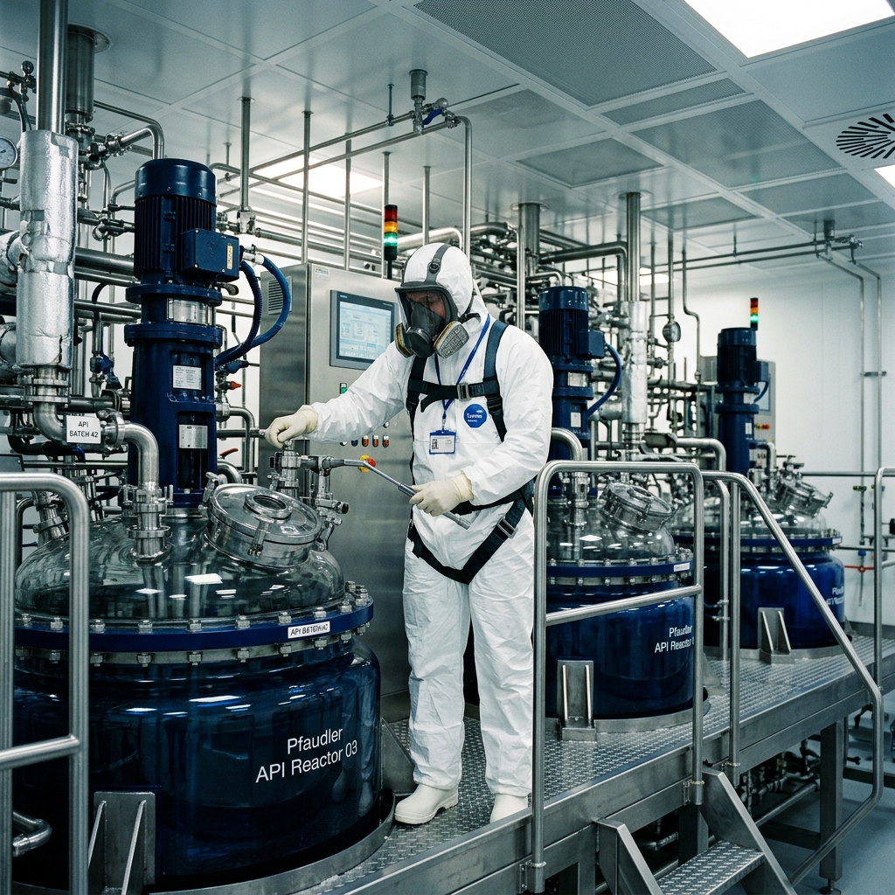
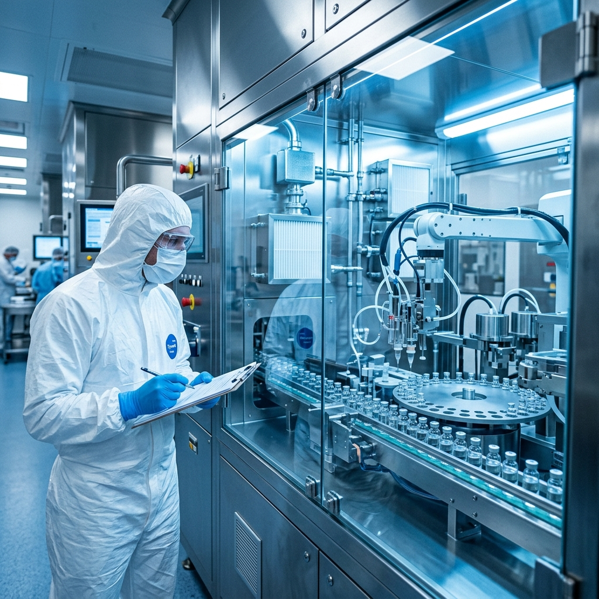
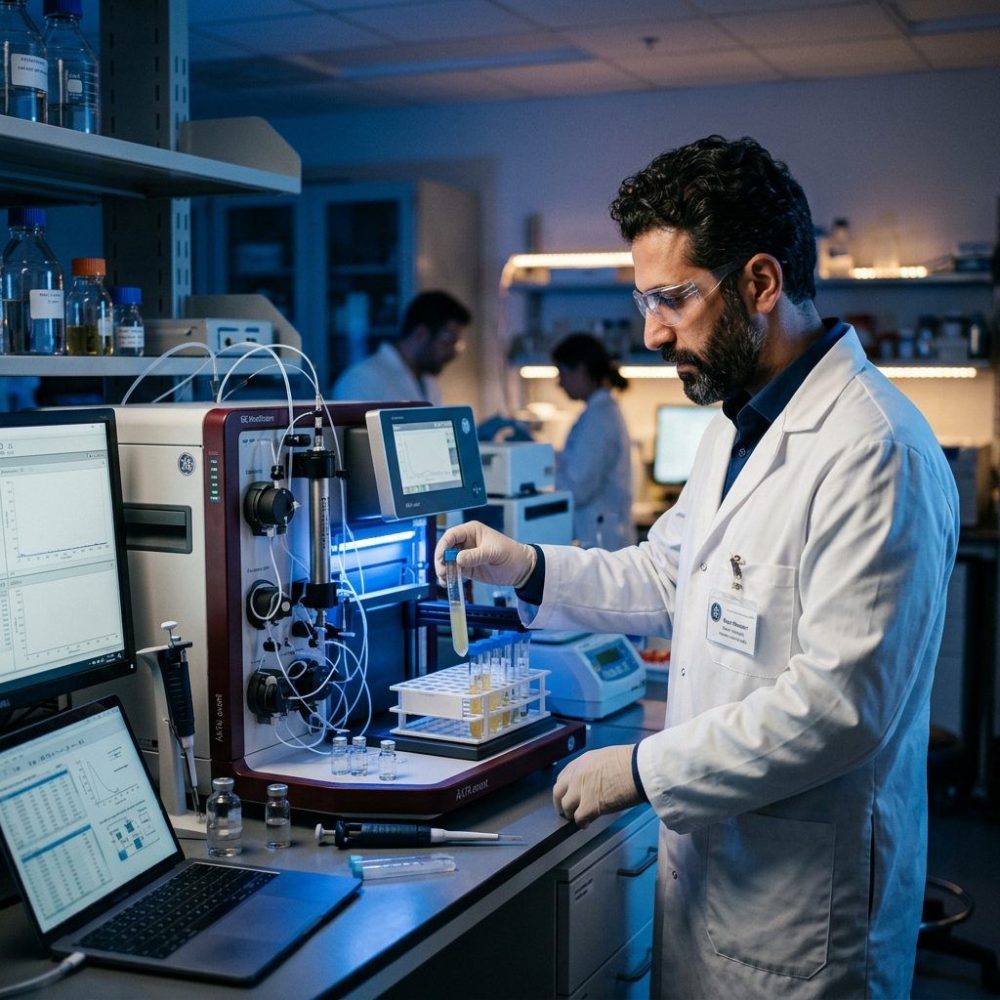
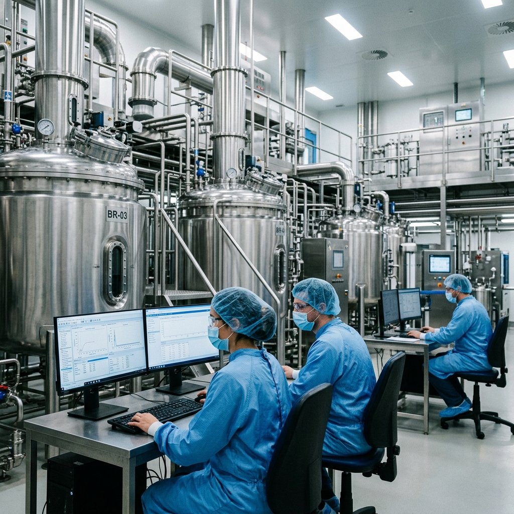
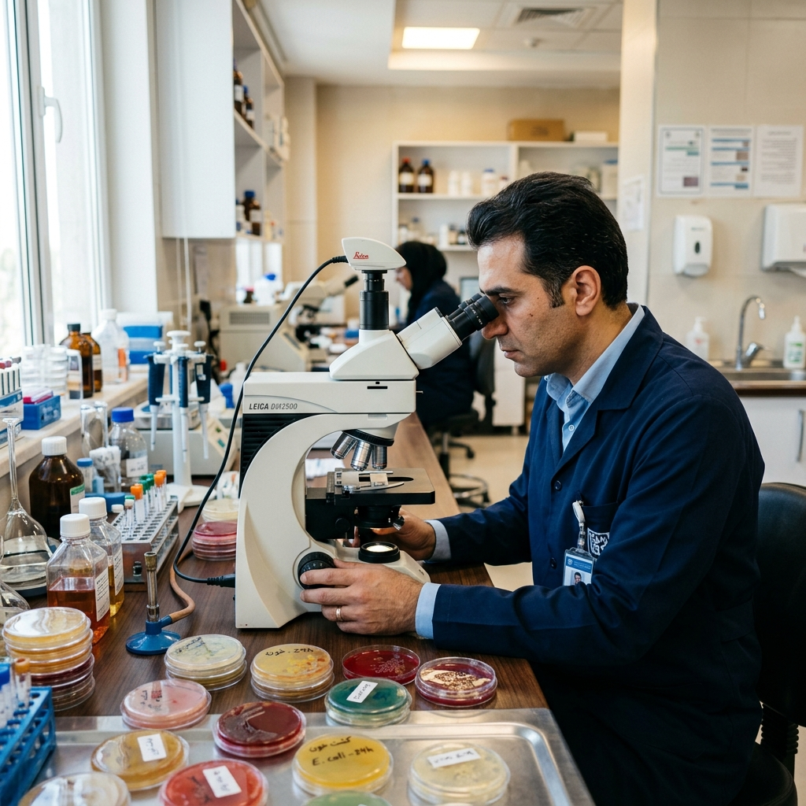
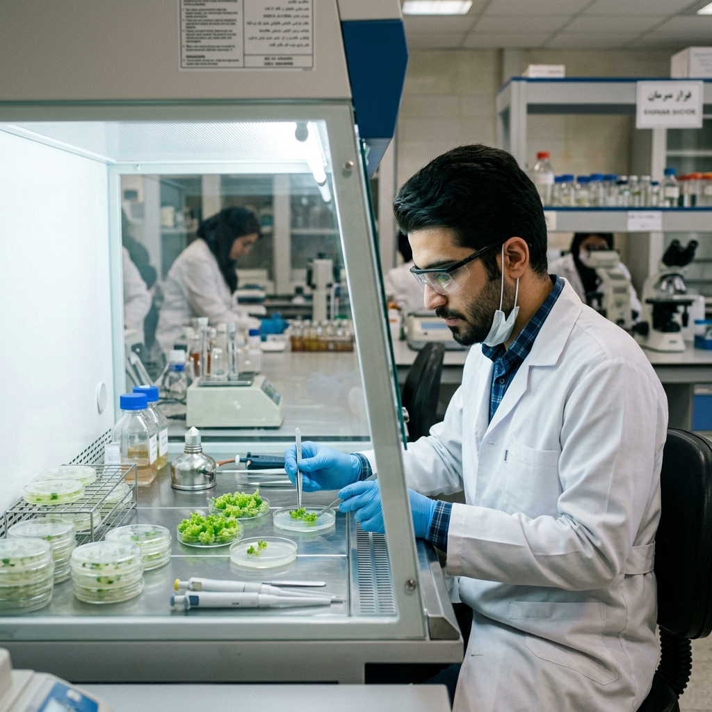

The Future of Monoclonal Antibodies
Exploring the latest advancements in downstream processing and purification techniques for scalable mAb production.
M.NasrollahKhani@gmail.com | (437) 663-7790 | LinkedIn | Mississauga, Ontario, Canada

Biotechnologist with 6+ years of experience across GMP-regulated biopharmaceutical and pharmaceutical manufacturing, spanning upstream operations, downstream protein purification, process validation, quality assurance, and chemical API production. Hands-on expertise in multistep chromatography on ÄKTA and NOVASEP systems, viral inactivation and filtration, TFF/diafiltration, and specialized chemistry including PEGylation and reductive amination. Experienced across mammalian, insect, and bacterial expression systems, with direct contribution to large-scale viral vaccine manufacturing. Strong foundation in cGMP, EU GMP, ICH Q7, Annex 1, and Annex 15, with proven cross-functional coordination, documentation, and training capabilities. WES-certified BSc in Biotechnology; working toward CAPM certification in near future.
Eurofins CDMO Alphora Inc. | Mississauga, ON, Canada
Dec 2023 – May 2026

CinnaGen Biosimilar Company | Tehran, Iran
Mar 2023 – Jul 2023

CinnaGen Biosimilar Company | Karaj, Iran
Aug 2021 – Mar 2023

CinnaGen Biosimilar Company | Karaj, Iran
Oct 2019 – Aug 2021

Shahid Madani Hospital | Karaj, Iran
Oct 2018 – Sep 2019

Amol University of Special Modern Technologies | Amol, Iran
2018 – 2019

ÄKTA Pure/Pilot/Process (UNICORN), NOVASEP HPLC, Protein A affinity, IEX, SEC, HIC; preparative HPLC; resin screening, column packing and qualification.
TFF/UF-DF, depth filtration, viral filtration (nanofiltration), final filtration.
Viral inactivation, viral vaccine manufacturing (Sf9/viral vector), PEGylation, cyanoborohydride-mediated reductive amination, lyophilization, inclusion body processing (solubilization & refolding).
Mammalian (CHO, HEK) cell culture; insect cell (Sf9); E. coli fermentation; inoculum preparation, seed culture, cell counting, harvest; bioreactor scales 5 L – 4500 L.
Disc-stack centrifuges, high-pressure homogenizers, glass-lined reactors, vacuum dryers, mills, filtration skids, CIP/SIP and COP systems, TFF cassette systems.
API manufacturing, crystallization, distillation, solvent recovery, Class 2 solvent handling (THF), high-potency intermediate handling, scrubber preparation.
Process Validation (PVP/PVR), Cleaning Validation (MACO, recovery studies, hold-time), Equipment Qualification (IQ/OQ/PQ) review, FMEA, deviation/CAPA, change control, non-conformance management, ALCOA+ data integrity.
EU GMP, ICH Q7, cGMP, GDP, Annex 1, Annex 15, BPRs, SOPs, technical reports, environmental monitoring, batch reconciliation.
In-process testing (pH, conductivity, UV/Vis), SDS-PAGE, yield/mass balance. Software: UNICORN, LIMS, SCADA/iFIX, Minitab.
University of Amol, Iran | WES Certified
2015 – 2019
English (fluent)
Persian (native)
Exploring the latest advancements in downstream processing and purification techniques for scalable mAb production.
Key considerations when transitioning TFF processes from pilot scale to commercial manufacturing.
A practical guide to identifying and resolving common binding and elution issues in Protein A steps.
Interested in working together or have a question? I'd love to hear from you.